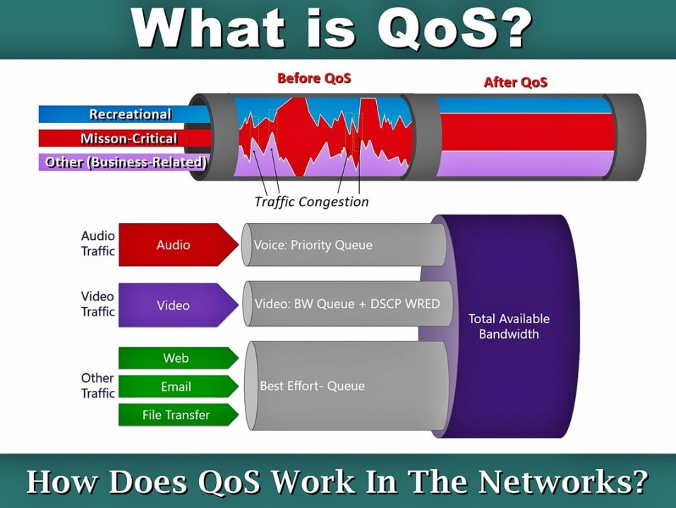

A sigla QoS significa “Quality of Service” (qualidade de serviço), é uma configuração disponíveis em equipamentos com software mais atualizado, mas infelizmente este serviço não é bem implementado na maioria dos modems. Ele trabalha com um preset de prioridades de banda, alocando uma largura de banda maior para um dispositivo em específico que pode ser configurado no software do modem mesmo. Recomenda-se desligar esta configuração mas isto não descarta a possibilidade de verificar se haverá melhora com este ajuste ligado.
